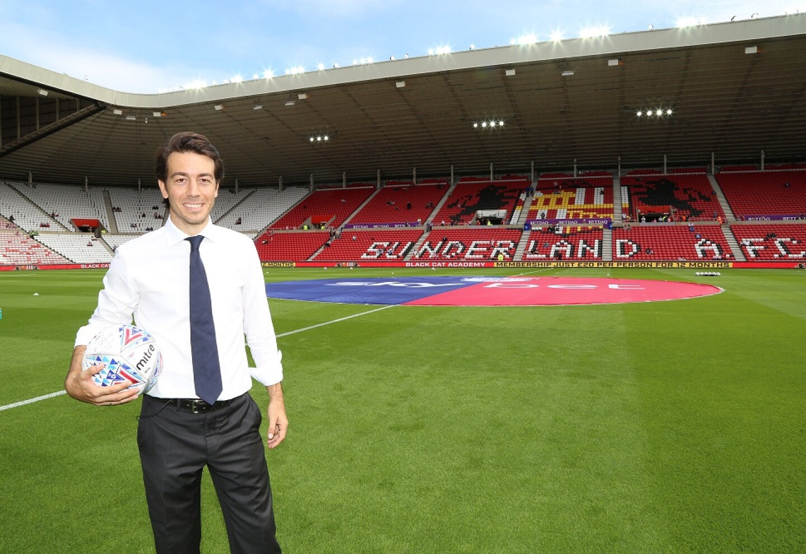
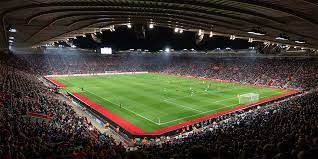

El empresario Kyril Louis-Dreyfus completó este jueves la compra del Sunderland convirtiéndose, a los 23
años, en el dueño más joven de las divisiones inglesas. La English Football League (EFL), que dirige las
categorías inferiores del fútbol inglés, autorizó este jueves la compra y Louis-Dreyfus, que ya ha
podido presenciar encuentros del Sunderland esta temporada, se convierte en el dueño.

Sunderland abre sus puertas
El Sunderland, equipo que milita en la segunda división inglesa, abrió este viernes las puertas de su
estadio, el Stadium of Light, para personas sin hogar por el fuerte temporal que se está produciendo en
Inglaterra.
El recinto permanecerá abierto todo el fin de semana, hasta, al menos, el próximo lunes a las 9 de la
mañana, dependiendo del clima. El club quiere proporcionar, de esta forma, un espacio seguro y cálido
debido a las condiciones meteorológicas adversas. Para ello, se habilitaron salas para dormir y se
dispone de comida y bebida caliente para las personas sin techo.
Las mascotas también serán bien recibidas en estos lugares habilitados, a los que se accede por la
puerta número 2 del estadio. Además, cualquier persona que quiera realizar donaciones de alimentos o
ropa podrá hacerlo hasta las 17.00 horas los viernes y de 9 a 17.00 horas los sábados y domingos,
informó el club inglés.

Nuevo Refuerzo
El Sunderland cerró el miércoles el fichaje de Ian Harte, ex jugador del Leeds United, que llega al club
británico después de finalizar su contrato de tres años con el Levante.
Harte, defensa irlandés que cumplirá 30 años el próximo 31 de agosto, firmó un contrato por un año con
el club que entrena su compatriota Roy Keane después de impresionar al propio Keane en una prueba hace
unos días.
Keane y Harte fueron compañeros en la selección de Irlanda con 66 y 64 partidos disputados,
respectivamente.